Location
Scroll down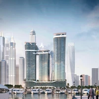
Seaheaven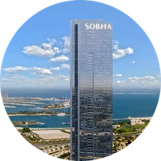
The S Sobha Hartland II
Sobha Hartland II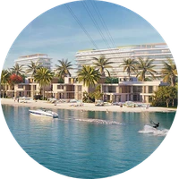
Siniya Island
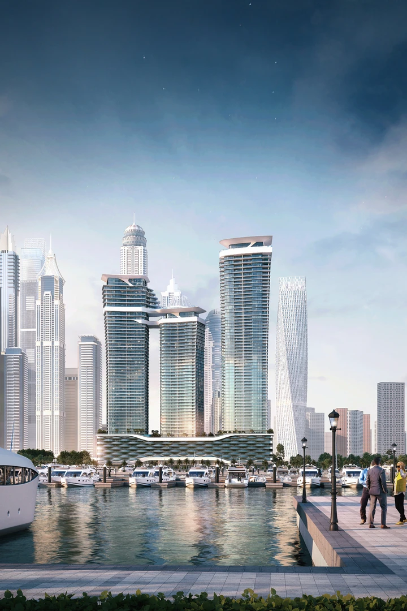
Seaheaven
Where The Seafront Meets The City
Sobha Seahaven is a premier sea-facing destination perfectly positioned at the heart of the city’s prestigious Dubai Harbour. With unmatched views of Ain Dubai, Palm Jumeirah, and the Marina skyline, these elevated residences offer direct access to Sheikh Zayed Road and ease of access to both of Dubai’s international airports.
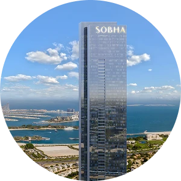
The S
Above it All, But Still Connected
Situated along the famed Sheikh Zayed Road atop one of Dubai’s most distinguished high-rise buildings, The S by Sobha Realty resides in proximity to the waterfront with majestic views of The Palm and Burj Al Arab. Guests can take advantage of the city’s most enticing offerings, from exclusive shopping and waterfront restaurants to world-class nightlife and entertainment.

Sobha Hartland II
A Private Sanctuary Minutes from Downtown
Positioned in the private Sobha Hartland II community, moments from downtown Dubai, villas in Sobha Hartland II Estates, mansions, and iconic The S penthouses combine access to sophisticated restaurants and retail with waterfront living and spectacular views of Dubai Canal, downtown Dubai, Meydan Racecourse, and Ras Al Khor wildlife sanctuary.
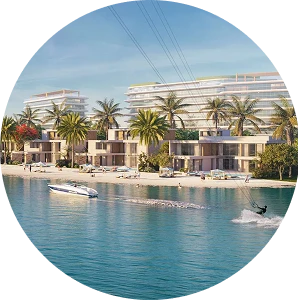
Siniya Island
Worlds Away, But Minutes from Dubai
Surrounded by the crystalline water and white sand beaches of Sobha Siniya Island, these beachside residences are set within a pristine natural paradise that embodies the ultimate in secluded luxury. Experience privacy, leisure and connection to nature with easy access to Dubai’s cosmopolitan offerings.
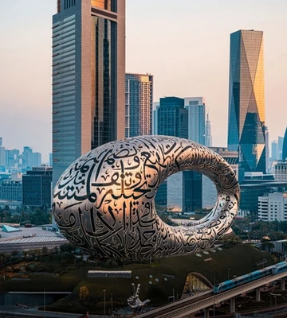
Museum of the Future
A groundbreaking museum dedicated to the future of science and human innovation. Guests of all ages can take a trip to 2071 to explore mixed reality exhibits, futuristic technologies, and the breakthroughs shaping tomorrow’s world.
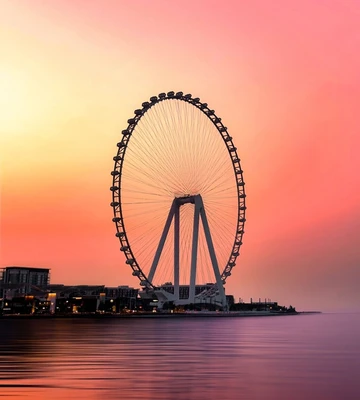
Ain Dubai
Get a one-of-a-kind perspective of Dubai’s iconic skyline on the world’s tallest observation wheel. Standing at 250 meters high, visitors can take in incredible panoramic views on an unforgettable 38-minute journey.
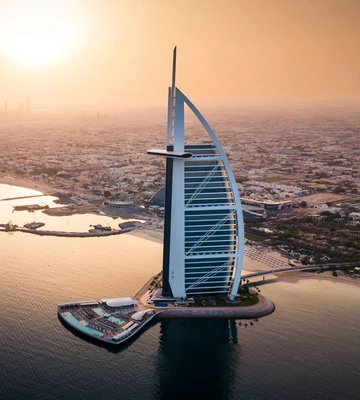
Burj Al Arab
Visionary architecture and seven-star luxury combine at this unmistakable landmark overlooking the Arabian Gulf. Book a guided tour, dine at a Michelin-starred restaurant, or take in the views from the breathtaking observation lounge.
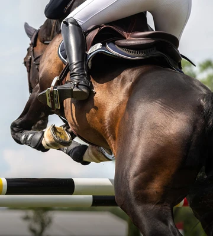
Racecourse Meydan
Horse enthusiasts and thrill-seekers alike can enjoy this world-famous racecourse playing host to the celebrated Dubai World Cup. Features a 1.5km long grandstand, horseracing museum, stable tours, fine dining, nightlife, and much more.
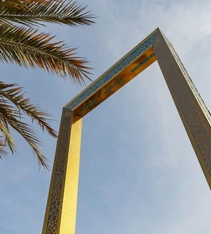
Dubai Frame
One of Dubai’s most unique attractions, this mesmerizing structure allows visitors to traverse a glass walkway between the two towers overlooking the city. Come discover an immersive experience dedicated to the city’s past, present, and future.
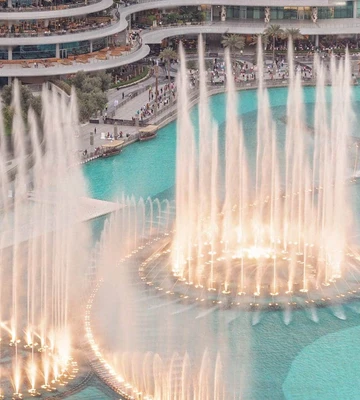
Dubai Mall
Redefine luxury at Dubai’s largest shopping mall -- home to an aquarium, ice rink, and over 1,200 retail stores featuring some of the world’s most coveted designers.
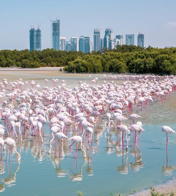
Ras Al Khor Wildlife Sanctuary
Escape from the city in this unique protected wildlife area. This globally important oasis of biodiversity serves as a sanctuary for flamingos, raptors, eagles, and a host of migratory species passing through each year.
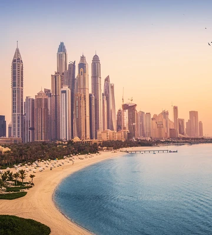
Dubai Harbour
Come and play at this luxurious waterfront district featuring the largest marina in the region. Experience world-class hotels, acclaimed restaurants, and exclusive retail outlets as you soak up sun and sea.